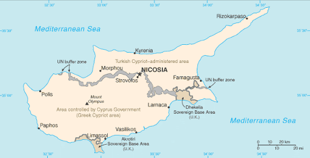
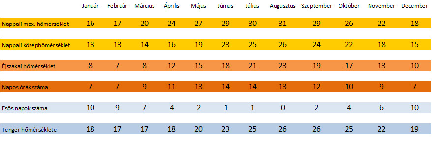
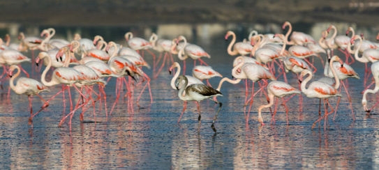

Ciprusi köztársaság
Ciprus Szicília és Szardínia után a Földközi-tenger legnagyobb szigete.
Észak-déli irányban négy tájra osztható:
Jelentős folyóval nem rendelkezik, gyakori a vízhiány. Leghosszabb a Pedieosz nevű, 96 km hosszú folyó.  A téli időszakban hulló jelentősebb mennyiségű csapadék az ország belső területein található hegyekből széles medreken keresztül jut el a tengerbe. Ezek a természetes medrek a nyári időszakban szárazon állnak. Az esőzésekből származó vizet a szigeten igyekeznek tározókba terelni, hogy a száraz időszakokban ezek segítségével csökkentsék a vízhiányt.Jelentős folyóval nem rendelkezik, gyakori a vízhiány. Leghosszabb a Pedieosz nevű, 96 km hosszú folyó.
 Cipruson az éghajlat jellegzetesen mediterrán: meglehetősen meleg és száraz, csapadék főleg november és március között, olykor villámlással, mennydörgéssel kísért zivatarok formájában esik. Havazás csak a hegyekben fordul elő, a tengerparti övezetben szinte sosem fagy. Az enyhe tél általában március-áprilisban gyorsan csap át a nyárba. A Tróodoszon a magasabb területeken az éghajlat kontinentális.
 Az alacsonyabb fekvésű vidékeken olajfa, szentjánoskenyérfa, tamariszkusz, eukaliptusz, ciprusfa és akácfa nő. A hegyek jellemző fái az aleppóifenyő, magyaltölgy és nyárfa, illetve a Tróodosz-hegység nyugati részén a cédrusfa. A hegycsúcsok közelében boróka és feketefenyő él. Tavasszal a következő virágok teszik színessé a szigetet: királyné gyertyája, szuhar, jácint, nárcisz, ciklámen, bazsarózsa, pipacs, leander, rekettye. A sziget legnevezetesebb állatai a Larnakai- és Akrotiri-sóstónál telelő flamingók. A Tróodosz-hegységben őshonos a ciprusi vadjuh. A hegyekben kis számban található barátkeselyű, ölyv, karvaly, vándorsólyom és vörös vércse. Szintén a Tróodosz-hegység területén él a sziget egyetlen mérgeskígyó faja a Levantei vipera. Az embernek a szigeten történt megjelenésének idején, 9000-11 000 évvel ezelőtt még élt ott a ciprusi törpe víziló (Hippopotamus minor), amely akkoriban halt ki. Ez a faj az ún. Messinai sókrízis után szorult a szigetre, a Földközi-tenger kiszáradása, majd újra víz alá kerülése után csakúgy, mint fajrokonai Krétára, Máltára, Szicíliára. Ciprus az európai madárvonulás egyik fő útvonalára esik. Madarak milliói szállnak le a szigeten a vonulási időszakban. A nemzetközi természetvédelmi szervezetek erőfeszítései és a helyi hatóságok erősen korlátozott fellépése ellenére évente több millió énekesmadár esik áldozatul a lakosság körében elterjedt illegális vadászatnak. Lőfegyverek mellett hálókkal és lépvesszőkkel - a fagyöngy terméséből főzött ragacsos anyaggal bekent és a bokrok ágaira erősített pálcikákkal - ejtik zsákmányul a madarakat. E tevékenység célja részben puszta szórakozás, de a zsákmány nagy részét az "ambepoulia" nevű étel elkészítésére használják fel, amelyet elterjedten fogyasztanak. Az ambepoluiát megkopasztott és bepácolt majd megsütött énekesmadarakból készítik el. E fajok Európában (Cipruson is) védettek, elejtésük törvényellenes. Jelenleg Cipruson pusztítják el Európában a legtöbb védett madarat.
A szigetország kulturális szempontból két egymástól viszonylag határozottan elkülönülő részre osztható: a görög és török ciprióták egyaránt őrzik kulturális hagyományukat, amely szorosan összefonódik Görögország és Törökország kulturális hagyományaival és életével. A két közösség közötti kulturális kölcsönhatás gyenge. A sziget görög kultúrájának gyökerei az ókori görög hagyományig nyúlnak vissza, a török ciprióta kultúra pedig az 1570-es ottomán megszállástól számítható. A szigetország vezetői sem az ottomán korszakban, sem a brit fennhatóság idején nem tettek semmit annak érdekében, hogy a két hagyomány közeledjen egymáshoz, így egységes ciprusi kulturális hagyomány nem alakult ki.